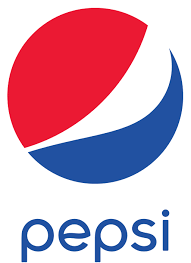

The first McDonald's drive-in was opened in 1940 by brothers Maurice (“Mac”) and Richard McDonald in San Bernardino, California. In 1948 the brothers revamped the business, and a newly envisioned McDonald's restaurant was created to produce huge quantities of food at low prices.
Apple was founded as Apple Computer Company on April 1, 1976.
The company was incorporated by Wozniak and Steve Jobs in 1977.
Its second computer, the Apple II, became a best seller as one of the first mass-produced microcomputers.

Pepsi was first invented in 1893 as "Brad's Drink" by Caleb Bradham, who sold the drink at his drugstore in New Bern, North Carolina. It was renamed Pepsi-Cola in 1898, "Pepsi" because it was advertised to relieve dyspepsia (indigestion) and "Cola" referring to the cola flavor.

Art is a creative activity. It produces a product, an object. Art is a diverse range of human activities in creating visual, performing subjects, and expressing the author's thoughts. The product of art is called a work of art, for others to experience.